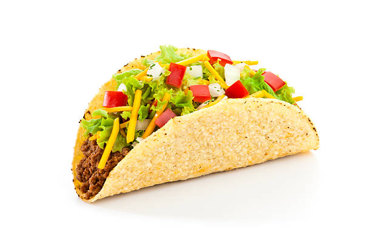
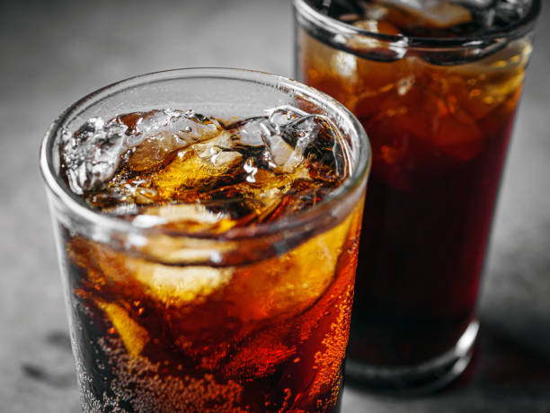

Benvinguts a la zona gastronòmica del Cronos Sound Festival. Encara que el nostre web principal estigui en manteniment, aquí tens tota la informació sobre els Food Trucks i barres disponibles al recinte.

Gaudeix de les millors hamburgueses 100% vedella i opcions veganes preparades al moment.
Ubicació: Just al costat de l'escenari principal. Pots veure les fotos de la zona a la Galeria d'Escenaris.
Horari: De 13:00h a 03:00h ininterrompudament.

Autèntic menjar de carrer mexicà amb tacos al pastor, quesadillas i nachos amb guacamole casolà.
Recomanació: Ideal per agafar forces entre concerts. Consulta els horaris de les actuacions al Programa del Festival.
Opcions sense gluten: Disponibles sota petició al taulell.

Punt principal d'hidratació amb refrescos freds, aigua, cervesa i sucs naturals.
Sistema de pagament: S'accepta targeta bancària i polsera Cashless del festival.
Reciclatge: Recorda tornar el teu got reutilitzable per recuperar el dipòsit.